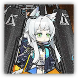

Rosmontis — Grasp of Reality
Melee, Ranged, Physical, Art; Humanoid Leader (Feline)

|
 |
Rhodes Island Elite Operator. Gazing upon the "human-shaped weapons" materialized from data, the girl's memories are no longer constrained. Now, she wishes to move forward alongside everyone — she has become braver. Grasp of Reality. A breakthrough training instructor modeled after Rosmontis's combat limits. Designed to test operators' sustained combat capabilities under extremely complex and dangerous conditions. Requires very careful handling. |
"Doctor, even if I don't remember, I know this isn't me. But if Rhodes Island needs it... I want to face it together with everyone."
Rosmontis "Grasp of Reality" | Simulated Sentry
Medium Humanoid (Feline), Lawful Neutral
| AC 21 | Initiative +16 (26) |
| HP 272 (32d8+128) | |
| Speed 35 ft., fly 60 ft. (Mythic Trait active only; hover) | |
| Mod | Save | Mod | Save | Mod | Save | |||||||||
|---|---|---|---|---|---|---|---|---|---|---|---|---|---|---|
| STR | 9 | -1 | +5 | DEX | 18 | +4 | +4 | CON | 18 | +4 | +4 | |||
| INT | 16 | +3 | +9 | WIS | 24 | +7 | +7 | CHA | 16 | +3 | +3 |
| Skills Arcana +9, Perception +13, Insight +13 |
| Immunities Blinded, Deafened, Charmed |
| Senses Darkvision 120 ft., Blindsight 30 ft., Tremorsense 60 ft., passive Perception 28 |
| Languages Common, Colombian |
| CR 20 (25,000 XP, or Mythic 50,000; PB +6) |
Traits
Phase Anchor. Rosmontis is immune to forced movement and teleportation effects at her own discretion.
Magic Resistance. Rosmontis has Advantage on saving throws made to resist spells or other magical effects.
Boss Resistance (3/Day). When Rosmontis fails a saving throw, she can expend 50 HP to instead succeed. Additionally, Rosmontis can take Legendary Action and expend a use of Boss Resistance to regain 50 HP.
Psychokinesis. When Rosmontis makes a saving throw to maintain Concentration, she can use Wisdom instead of Constitution. Additionally, Rosmontis adds her Wisdom modifier to her AC (included above).
Cognitive Collapse (Mythic Trait; Recharges on Long Rest). If Rosmontis's HP is reduced to 0, she doesn't die. At the start of her next turn, her HP resets to 272, she finishes recharging Amplified Flinge, and she regains all expended uses of Boss Resistance. Additionally, for one hour, Rosmontis can use the options in the "Mystic Actions" section and gains a flying speed of 60 ft. (hover).
Memory Loss (Active only during Cognitive Collapse). Each time Rosmontis ends her turn, she takes 10 psychic damage, and deals 10 psychic damage to each enemy within 20 ft. of her Emanation.
Actions
Multiattack. Rosmontis makes two Mind Onslaught attacks. She can replace one of these attacks with Amplified Flinge (if available) or a Cast a Spell action.
Mind Onslaught. Melee or Ranged Weapon Attack: +13 to hit, reach 10 ft. or range 120 ft. Hit: 21 (6d6) bludgeoning damage, and the target or another creature within 5 ft. of it takes 7 (2d6) thunder damage.
Amplified Flinge (4/Day). Rosmontis designates a point on the ground within 120 ft. and hurls tactical equipment at that point. Constitution Saving Throw: DC 21 (has Disadvantage if the target is Prone or Stunned), each creature in a 15-ft. cube originating from that point. Failure: 26 (4d12) bludgeoning damage and 26 (4d12) thunder damage, and the target is Stunned until the end of its next turn. Success: Half damage only. Failure or Success: Rosmontis summons a Vector Tactical Equipment at that point. If the space is occupied, nearby creatures are also pushed to the nearest unoccupied space.
Artcasting. Rosmontis casts one of the following spells as a 13th-level caster, requiring no material components and using Wisdom as her spellcasting ability (Spell Save DC 21, Spell Attack +13).
At will:Message, Prestidigitation, Guidance, Mending, Mage Hand (hand is invisible)
3/day each:Catapult, Detect Thoughts, Fly, Dispel Magic (4th-level version)
2/day each:Banishment
1/day each:Psychic Prison, Bigby's Hand (7th-level version; 100 HP)
Reactions
Counterspell. Rosmontis casts Counterspell (see those spells for trigger conditions), using Wisdom as her spellcasting ability.
Mind Matrix. Trigger: Rosmontis is about to take damage, and there is at least one Vector Tactical Equipment within 120 ft. of her. Response: All damage Rosmontis takes until the end of this turn is halved. If the Vector Tactical Equipment still exists at the end of this turn, Rosmontis regains the spent Reaction.
Legendary Actions
Legendary Actions: 3 (4 in lair). Rosmontis can take one of the following actions immediately after another creature's turn. She regains all Legendary Actions at the start of her turn.
Instant Burst. Rosmontis immediately makes one Mind Onslaught attack.
Telekinetic Shove. Strength Saving Throw: DC 21, one creature Rosmontis chooses within 120 ft. Failure: 14 (4d6) bludgeoning damage, and the target is pushed 10 ft. away by Rosmontis and becomes Prone.
Swift Artcasting. Rosmontis uses her Artcasting feature to cast a spell of 6th level or lower with a casting time of 1 action. She can't do so again until the start of her next turn.
Mystic Actions
If Rosmontis's Cognitive Collapse trait is activated, she can choose from the following options as Legendary Actions.
As You Wish. Rosmontis immediately finishes recharging Amplified Flinge.
Mental Tremor. Wisdom Saving Throw: DC 21, each enemy within 20 ft. of her Emanation. Failure: 14 (4d6) psychic damage, and the target falls Prone.
Sense Stabilize. Rosmontis gains 26 (4d12) HP of Temporary HP. Additionally, her AC gains a +2 bonus until Rosmontis takes a Legendary Action on her next turn.